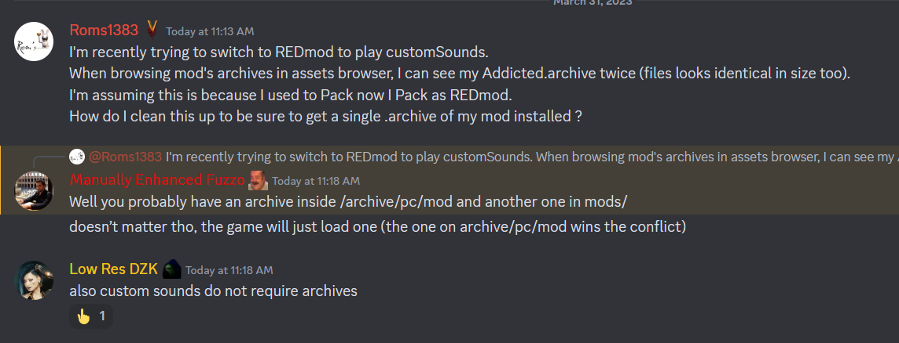
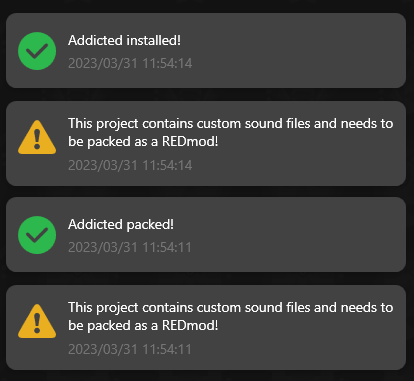

customSounds
Custom sounds can be added to the game with REDmod.
-
unrelated to Pack as REDmod or Pack, both works
.archive and customSounds are distinct
-
if mod was both Packed and Packed as REDmod, files under
archive/pc/mod(ArchiveXL) takes precedence over files inmods(REDmod).  -
must be copied over into:
{install}/mods/{my-mod}/customSounds(all your .wav){install}/mods/{my-mod}/info.json
-
requires run
deployon REDmod cli whenever changed REDmod cli can be found in game's files{install}/tools/redmod/bin/redMod.exe(seedeploycommand in justfile) -
requires game settings:
-modded
encoding
.wav works in 44100Hz 16bits mono (pcm_s16le in ffmpeg).
🆕 actually I made a further experiment using ww2ogg and ffprobe to extract the infos from vanilla audio files.
vanilla .wav suggests 48000Hz 16bits mono.
analyze with ffprobe
$ just analyze C:\\Development\\modding-cyberpunk\\4ddicted\\archive\\source\\archive\\base\\localization\\common\\vo\\civ_mid_m_85_mex_30_mt_vista_del_rey_f_1ed3f72f92559000.wem
ffprobe -i 'C:\Development\modding-cyberpunk\4ddicted\archive\source\archive\base\localization\common\vo\civ_mid_m_85_mex_30_mt_vista_del_rey_f_1ed3f72f92559000.wem' -show_format
ffprobe version 6.0-essentials_build-www.gyan.dev Copyright (c) 2007-2023 the FFmpeg developers
built with gcc 12.2.0 (Rev10, Built by MSYS2 project)
configuration: --enable-gpl --enable-version3 --enable-static --disable-w32threads --disable-autodetect --enable-fontconfig --enable-iconv --enable-gnutls --enable-libxml2 --enable-gmp --enable-lzma --enable-zlib --enable-libsrt --enable-libssh --enable-libzmq --enable-avisynth --enable-sdl2 --enable-libwebp --enable-libx264 --enable-libx265 --enable-libxvid --enable-libaom --enable-libopenjpeg --enable-libvpx --enable-libass --enable-libfreetype --enable-libfribidi --enable-libvidstab --enable-libvmaf --enable-libzimg --enable-amf --enable-cuda-llvm --enable-cuvid --enable-ffnvcodec --enable-nvdec --enable-nvenc --enable-d3d11va --enable-dxva2 --enable-libmfx --enable-libgme --enable-libopenmpt --enable-libopencore-amrwb --enable-libmp3lame --enable-libtheora --enable-libvo-amrwbenc --enable-libgsm --enable-libopencore-amrnb --enable-libopus --enable-libspeex --enable-libvorbis --enable-librubberband
libavutil 58. 2.100 / 58. 2.100
libavcodec 60. 3.100 / 60. 3.100
libavformat 60. 3.100 / 60. 3.100
libavdevice 60. 1.100 / 60. 1.100
libavfilter 9. 3.100 / 9. 3.100
libswscale 7. 1.100 / 7. 1.100
libswresample 4. 10.100 / 4. 10.100
libpostproc 57. 1.100 / 57. 1.100
[wav @ 0000023cb642ebc0] Estimating duration from bitrate, this may be inaccurate
[wav @ 0000023cb642ebc0] Could not find codec parameters for stream 0 (Audio: none ([255][255][0][0] / 0xFFFF), 48000 Hz,
1 channels, 103 kb/s): unknown codec
Consider increasing the value for the 'analyzeduration' (0) and 'probesize' (5000000) options
Input #0, wav, from 'C:\Development\modding-cyberpunk\4ddicted\archive\source\archive\base\localization\common\vo\civ_mid_m_85_mex_30_mt_vista_del_rey_f_1ed3f72f92559000.wem':
Duration: 00:00:05.94, bitrate: 103 kb/s
Stream #0:0: Audio: none ([255][255][0][0] / 0xFFFF), 48000 Hz, 1 channels, 103 kb/s
Unsupported codec with id 0 for input stream 0
[FORMAT]
filename=C:\Development\modding-cyberpunk\4ddicted\archive\source\archive\base\localization\common\vo\civ_mid_m_85_mex_30_mt_vista_del_rey_f_1ed3f72f92559000.wem
nb_streams=1
nb_programs=0
format_name=wav
format_long_name=WAV / WAVE (Waveform Audio)
start_time=N/A
duration=5.937938
size=76925
bit_rate=103638
probe_score=99
[/FORMAT]
packaging
it's perfectly fine to Pack normally in WolvenKit, while still using REDmod for custom sounds on the side.
The following warnings on Pack .archive can safely be ignored. REDmod will still load the custom sounds if found in the game files, as previously mentioned.

translations
files in customSounds can perfectly be nested in subdirectories,
allowing (separate mods included) to prepare voices for translations,
under e.g. en-us/.
localization
Codeware also provides LocalizationSystem to easily handle translations of any kind: voice, subtitle, etc.
credits to people at Discord, especially @Manually Enhanced Fuzzo, @IslandDancer
credits to @bespokecomp on Github